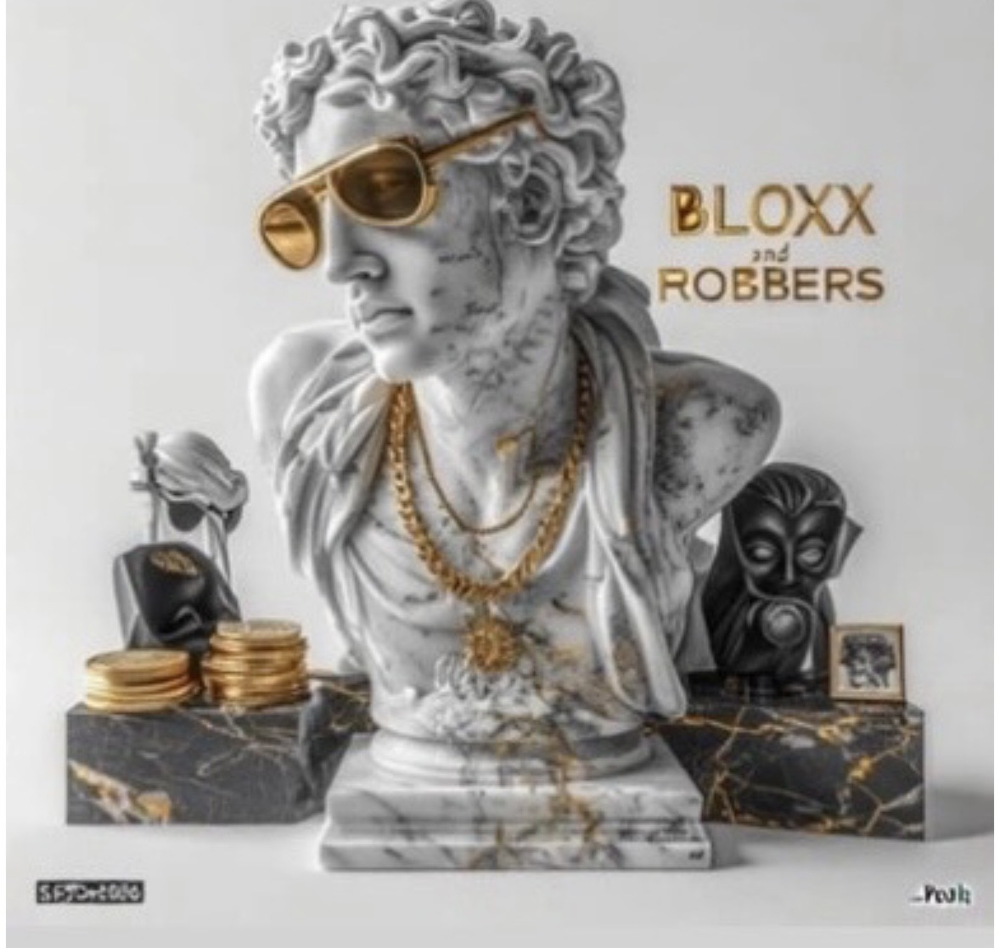
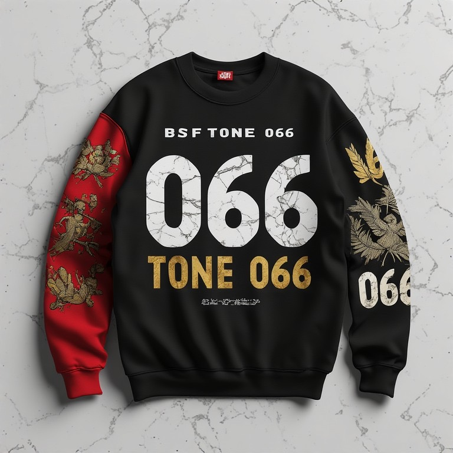
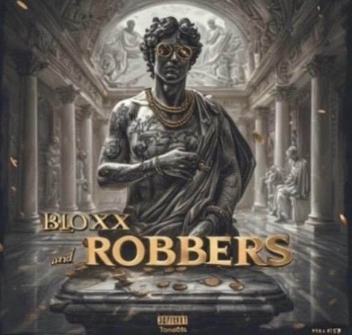
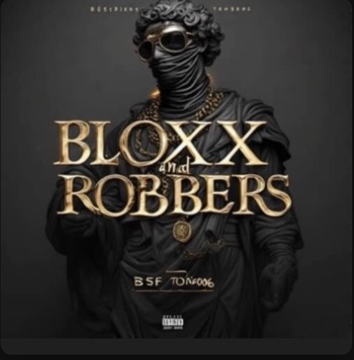
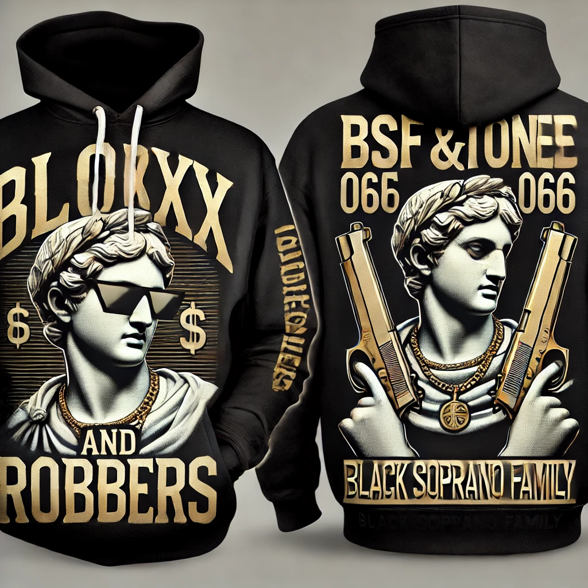
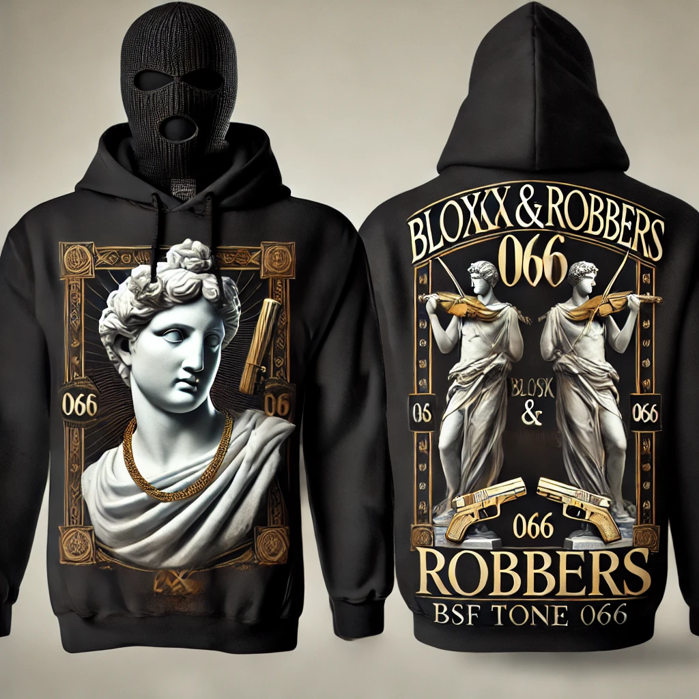
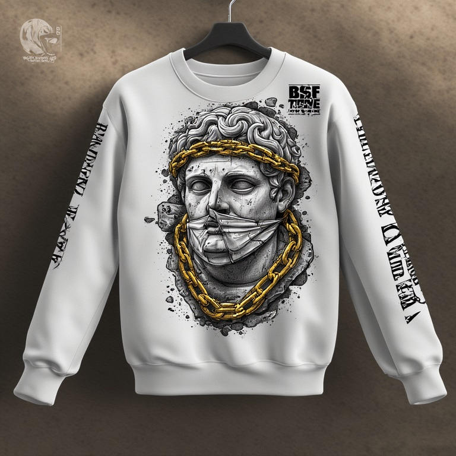
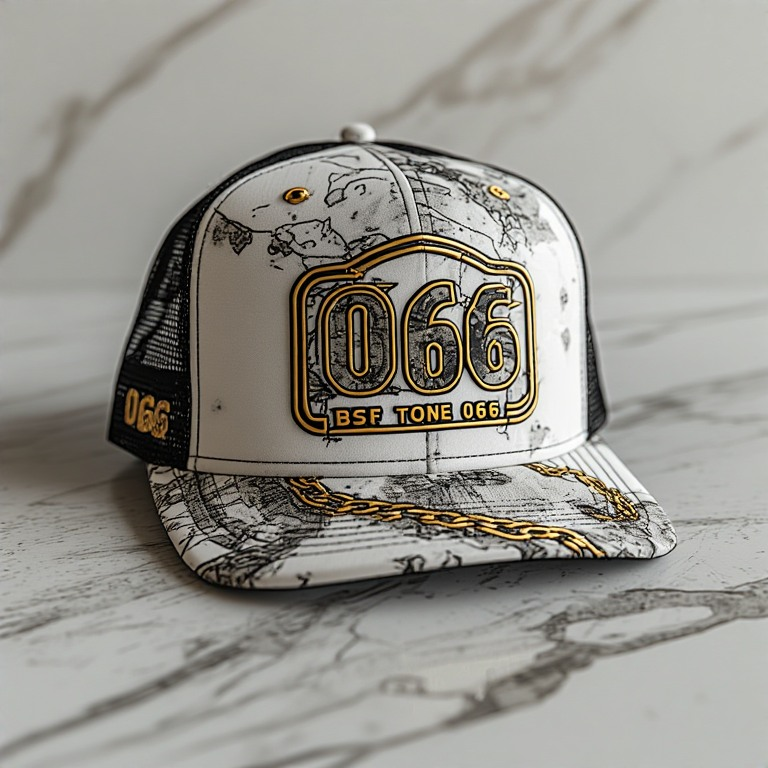

BSF TONE 066 / BLOXX AND ROBBERS / COVER + MERCH
ONE WORLD.
MANY SURFACES.
Benny Bundles’ creative work around Bloxx and Robbers expanded beyond one square image into a coordinated visual identity. Multiple cover directions and merchandise applications are presented together here as one client-facing case study.
4Cover directions
4Merch designs
1Profile asset
9Repository assets
BUNDLES / CONTRIBUTION MAP
Artwork became a system.
01 / COVER ARTVisual Direction
Multiple stone/statue-led visual approaches established alternate album directions without losing the central Bloxx and Robbers identity.
02 / MERCHIdentity Extension
Apparel designs carry the same project language into wearable surfaces rather than treating merch as a disconnected afterthought.
03 / COLLABORATIONCross-Discipline Continuity
The design work sits inside a larger relationship that also includes production and early visual-direction work.
REPOSITORY-BACKED CLIENT WORK
Cover directions + merch.






